Новый сайт CLD
Навигация, карточки анализов, иконки и тексты. Предложения для lab.discript.ru с кликабельным прототипом
Навигация, карточки анализов, иконки и тексты. Предложения для lab.discript.ru с кликабельным прототипом
Каркас нового сайта рабочий: каталог с ценами по пункту, корзина, кабинет. Мешают три вещи: человеку трудно найти нужный анализ, карточки ничего не объясняют, а графика собрана из разных стилей.
Скриншоты lab.discript.ru от 22.10.2026, ширина 1440 и 390 px. Формы не отправлялись, вход не выполнялся.
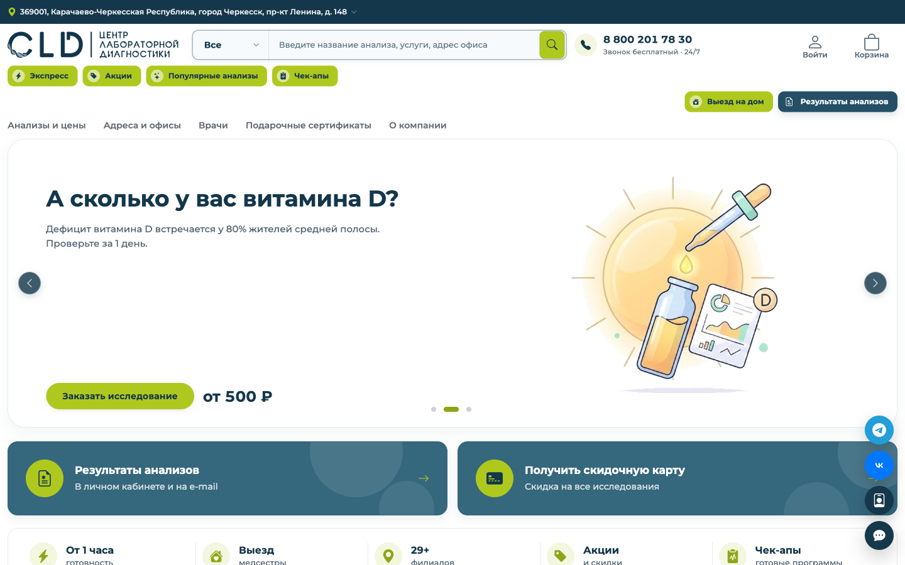
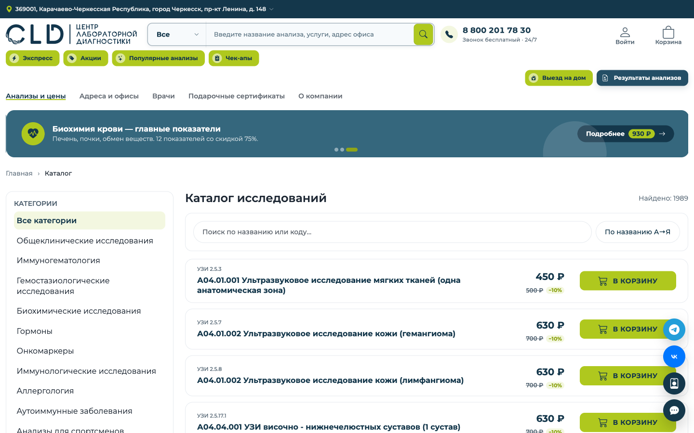
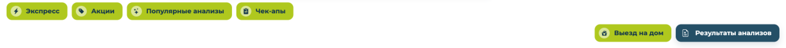
Шапка: значки 11 px в белых кругах на лайме, кнопки переносятся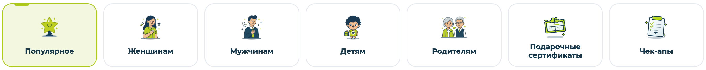
Разделы на главной: мультяшные PNG 1024 × 1024 по 158–442 КБ, показаны 60 × 60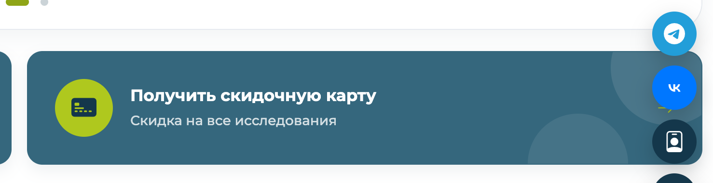
Плавающие кнопки перекрывают стрелку и карточку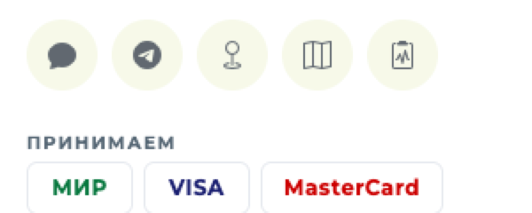
Соцсети в футере ведут на корни сайтов: vk.com/, t.me/, 2gis.ru/| Что | Где | Как исправить | |
|---|---|---|---|
| Залитые и контурные значки в одном ряду | Шапка, «Почему CLD», футер, фильтры | Один набор линейных SVG, толщина 1,8 px | P1 |
| Одно понятие — разные значки | Корзина трёх видов, выезд на дом двух | Словарь: одно понятие — один значок | P2 |
| Тяжёлые картинки | Лицензия 48 × 68 px весит 596 и 613 КБ; разделы — 1,49 МБ | SVG или webp нужного размера, lazy-загрузка | P1 |
| Логотип PNG и прозрачность 0,7 в футере | Шапка, футер | SVG из брендбука, без прозрачности | P2 |
| Названия рвутся посреди слова | «Аланинаминотрансф / ераза» | lang="ru", hyphens: auto | P2 |
Структура, которую видит пациент, и три экрана прототипа: главная, раздел каталога, карточка анализа. Цены — реальные, пункт Черкесск, ул. Гутякулова, 20.
Каждый анализ живёт в одном основном разделе, а в других появляется ссылкой. Привязку раздела задаём в МИС, тогда сайт, приложение и карты берут одну структуру.
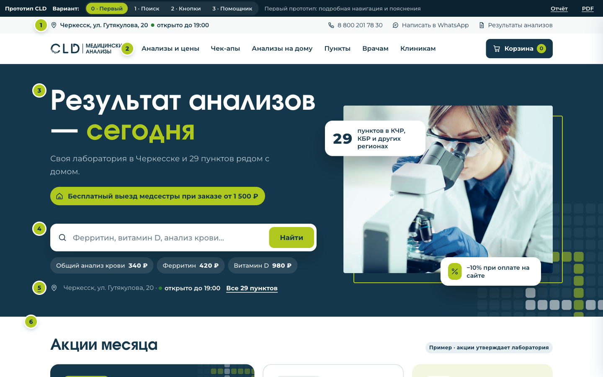
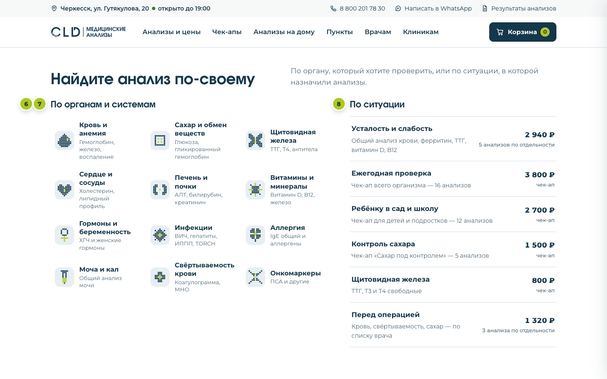
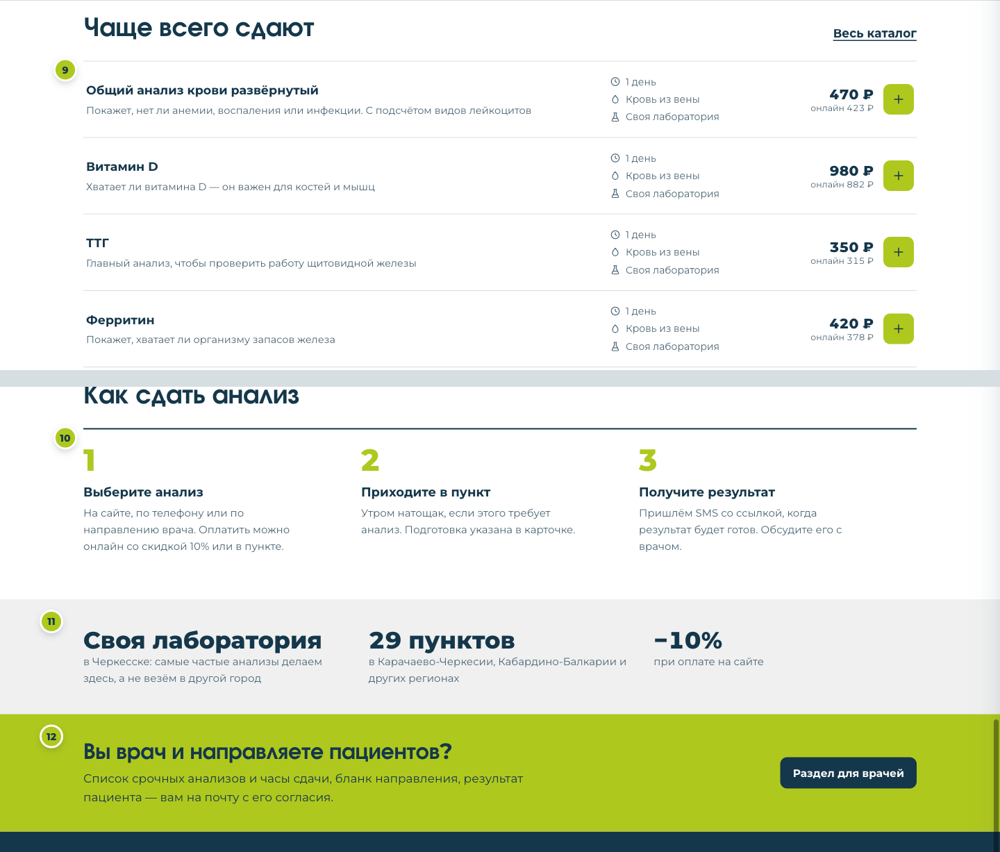
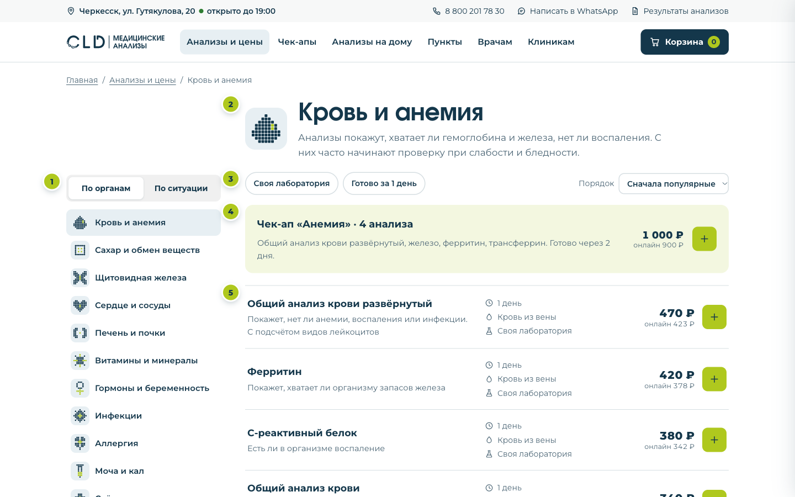
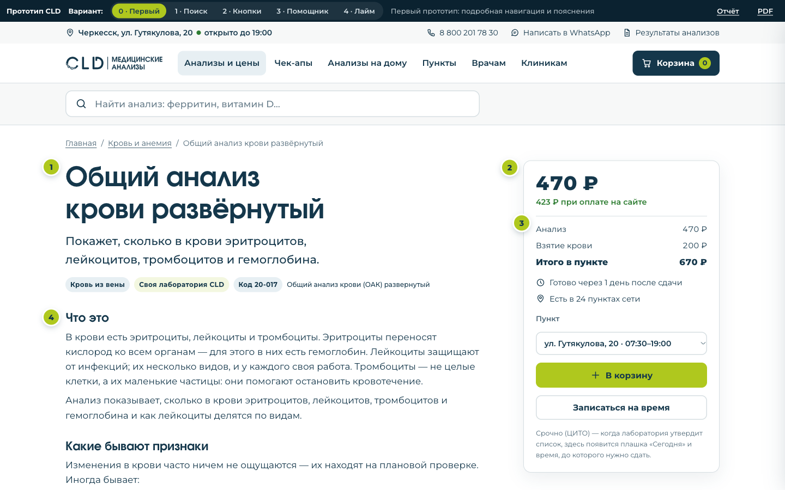
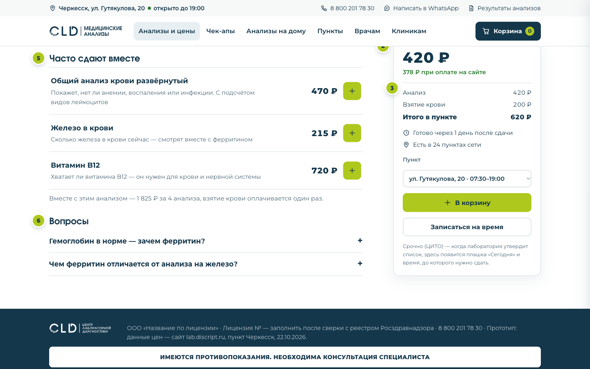
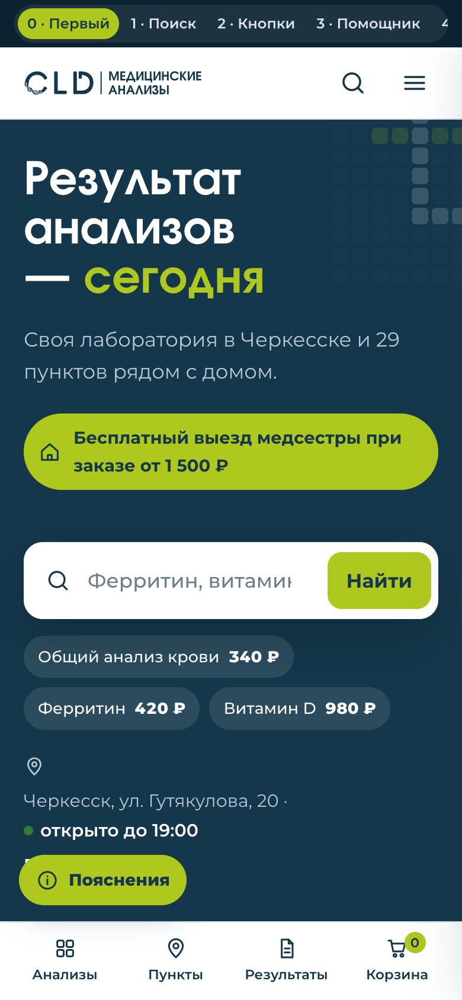
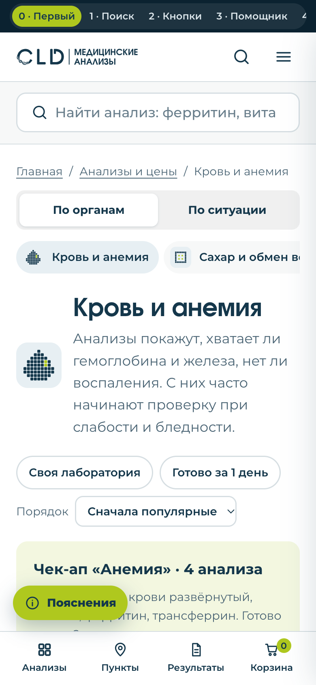
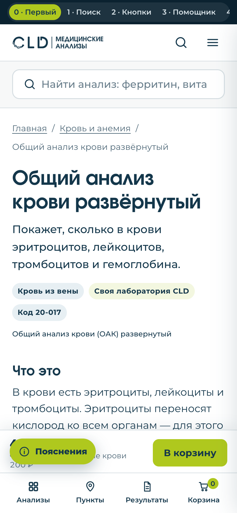
Один скелет для всех анализов и шаблон для каждого раздела. Простым языком, без норм и диагнозов, своими словами — без пересказа чужих лабораторий. Каждую карточку перед публикацией вычитывает врач.
| Блок | Что в нём | Длина |
|---|---|---|
| Название | Простое название и строка «Официальное название» из МИС. Можно «Ферритин: запас железа в организме» | до 60 знаков |
| Одна строка | Начинается с «Покажет…». Идёт в каталог, поиск и описание страницы для Яндекса | до 120 |
| Что покажет | Что измеряют и зачем это врачу. Термин — сразу с пояснением | до 300 |
| Кому и когда | Жизненные ситуации, а не диагнозы: усталость, беременность, перед операцией, контроль лечения | 3–5 пунктов по 90 |
| Как подготовиться | Стандарт по типу материала. Особое правило — только с источником. Всегда: «Лекарства сами не отменяйте» | до 350 |
| Что сдаём и срок | Поля МИС словами пациента: «кровь из вены», срок, цена. Плашка «Сегодня» или «ЦИТО» — только из утверждённого списка | из МИС |
| Как понимать результат | Что может значить повышение и понижение, частые причины без болезни. Всегда: «Норму лаборатория указывает в бланке результата» | до 450 |
| Часто сдают вместе | 2–4 анализа или чек-ап из каталога CLD. Без слов «обязательно» и «нужно» | ссылки |
| Вопросы | 2–3 вопроса пациента и короткие ответы фактами | 70 + 220 |
| Дисклеймер | «Результат анализа — не диагноз. Обсудите его с врачом». У онкомаркеров, гормонов, инфекций — свой | 1 фраза |
| В МИС | В карточке, поле «Что сдаём» |
|---|---|
| Сыворотка, плазма, венозная кровь | кровь из вены |
| Капиллярная кровь | кровь из пальца |
| Моча разовая, утренняя | утренняя моча (контейнер) |
| Моча суточная | вся моча за сутки (контейнер) |
| Соскоб, мазок урогенитальный | мазок (берёт медсестра или врач) |
| Буккальный эпителий | мазок с внутренней стороны щеки |
| Не пишем | Пишем |
|---|---|
| биоматериал, забор | что сдаём, кровь из вены, взятие крови |
| форменные элементы крови | клетки крови |
| референсные значения | норма, которую лаборатория указывает в бланке |
| верификация диагноза | врач уточнит причину |
| сенсибилизация | повышенная чувствительность к аллергену |
| патология | изменения, болезнь |
| нефротоксичные препараты | лекарства, которые могут влиять на почки |
| Раздел | Что особого в тексте | Обязательно сказать | Нельзя писать |
|---|---|---|---|
| Кровь и анемияОАК, ферритин, железо, трансферрин | Какую работу делает эта часть крови: эритроциты носят кислород, лейкоциты защищают. Ферритин и железо — утром натощак | «Один показатель редко даёт ответ, врач смотрит на сочетание» | «Выявит лейкоз», «начните пить железо», «кровь густая» |
| БиохимияАЛТ, АСТ, билирубин, креатинин, СРБ | Какой орган «отвечает» за показатель. Причины без болезни: нагрузка, мясо, лекарства, мало воды | «Одно отклонение — ещё не диагноз». Для креатинина — что по нему считают СКФ | «Покажет цирроз», «почистите печень», любой детокс |
| Сахар и обменглюкоза, HbA1c, инсулин, ГТТ | Глюкоза натощак 8–14 часов, HbA1c можно не натощак, глюкозотолерантный тест — по направлению врача | Сахар бывает повышен временно: стресс, болезнь, лекарства. Диагноз ставит врач после повторного анализа | «Покажет, есть ли диабет», «сахар в норме — диабета нет», советы по диете |
| Сердце и сосудыхолестерин, липидный профиль | Обычно натощак. Результат смотрят вместе с давлением, возрастом, курением, сахаром | «Целевые значения назначает врач — они зависят от вашего общего риска» | «Будет инфаркт», статины и добавки, «плохой холестерин» без пояснения |
| Свёртываемостькоагулограмма, МНО, D-димер | О препаратах, разжижающих кровь, сказать медсестре. Сами не отменять и не переносить приём | «Результат оценивают вместе с лекарствами, которые вы принимаете» | «D-димер в норме — тромба нет», «пейте аспирин» |
| Щитовидная железапроверка врачомТТГ, Т4 свободный, АТ-ТПО | Связка «гипофиз — щитовидная железа». Про таблетку гормонов: спросить врача, пить ли её до анализа | «ТТГ обычно проверяют первым, остальное врач добавит при отклонении» | «ТТГ выявит рак», советы по йоду и дозам |
| Половые гормоныпроверка врачомФСГ, ЛГ, пролактин, АМГ, ХГЧ | Блок «В какой день цикла сдавать». Деликатно: «при планировании беременности», а не «проблемы с зачатием» | Гормоны меняются в течение цикла и дня, одно значение оценивает только врач | «АМГ покажет, сможете ли забеременеть», «ХГЧ заменяет УЗИ» |
| Раздел | Что особого в тексте | Обязательно сказать | Нельзя писать |
|---|---|---|---|
| ВитаминыD, B12, фолиевая кислота, магний | Не обещать пользу проверки «на всякий случай»: витамин D всем подряд не советуют. Сказать врачу о добавках | «Нужно ли принимать витамин и в какой дозе, решает врач» | Дозы и БАДы, «у большинства дефицит», «защитит от простуды» |
| Инфекции по кровиВИЧ, гепатиты, сифилис, IgM и IgG | Один абзац про IgM и IgG для всех карточек. «Период окна». Строка «Результаты — врачебная тайна» | Первый положительный результат — ещё не диагноз, нужен подтверждающий анализ | «TORCH обязателен всем беременным», «IgG есть — вы больны», оценки поведения |
| ПЦР и мазкихламидии, ВПЧ, микоплазмы | Правила сбора мазка из клинических рекомендаций. Про партнёра — без нажима: «врач расскажет, нужно ли обследование» | «Результаты анализов — врачебная тайна» | «100% точность», намёки на измену, названия антибиотиков |
| Моча и калОАМ, Нечипоренко, скрытая кровь | Главный блок — как собрать, в какой контейнер, за сколько часов принести и где взять контейнер | «Если материал собран не по правилам, анализ могут попросить пересдать» | «Скрытая кровь выявит рак», «чистка от паразитов» |
| АллергияIgE общий, специфические IgE | Общий IgE не говорит, на что аллергия. Найденные специфические IgE — чувствительность, не всегда аллергия | У детей норма зависит от возраста — лаборатория указывает её в бланке | «100 аллергенов найдут причину», убрать продукты по анализу |
| Онкомаркерытолько после врачаПСА, РЭА, СА-125, АФП | Первый абзац: «Это не анализ на рак». Блок «Кому» начинается с «По назначению врача» | «Онкомаркер не ставит и не исключает диагноз рака. О дальнейших обследованиях решает врач» | «Ранняя диагностика рака», «онкочек-ап», «анализ на рак груди» |
| Генетикаврач-генетиктромбофилии, BRCA, кариотип | Только рамка: тексты пишет и проверяет врач-генетик | «Результат генетического анализа обсуждайте с врачом-генетиком» | «Ген рака», «узнайте судьбу», питание и спорт «по генам» |
| Чек-апы6 программ CLD | Свой скелет: для кого, что входит, зачем каждый анализ. Подготовка — по самому строгому, срок — по самому долгому | Выгода — только расчётом от цен каталога. «Программа не заменяет приём врача» | «Узнайте всё о здоровье», «чек-ап на рак», «скидка до…» |
ПСА общий: проверка простаты
Официальное название: исследование уровня простатспецифического антигена общего в крови · код 41-016
Покажет уровень белка ПСА, который помогает врачу оценить состояние простаты.
ПСА — белок, который вырабатывают клетки предстательной железы (простаты). Он повышается при разных её болезнях, не только при раке, поэтому это не анализ «на рак». Сдавать ли его, решите с врачом.
Что сдаём: кровь из вены. Срок и цена — из МИС: 480 ₽ в Черкесске.
ПСА повышается при увеличении простаты, простатите, после осмотра и процедур — и при раке. Один повышенный результат не означает рак: врач может попросить пересдать анализ или назначить обследования. Нормальный ПСА болезнь полностью не исключает. Норму лаборатория указывает в бланке результата.
Почему перед анализом нельзя ездить на велосипеде? Это может временно повысить ПСА, и результат будет менее точным.
Как часто сдавать ПСА? Решает врач — по возрасту, наследственности и прошлым результатам.
Онкомаркер не ставит и не исключает диагноз рака. О дальнейших обследованиях решает врач.
Врач лаборатории проходит по десяти пунктам. Если пункт не выполнен, карточка возвращается редактору. На сайте рядом с текстом — дата проверки.
| Задача | Кто | Зачем | |
|---|---|---|---|
| P0 | Новая структура каталога: 12 разделов и 6 ситуаций, привязка анализа к разделу в МИС; убрать партнёрские деревья, УЗИ и услуги, дубли с «©» | IT + маркетинг | Человек находит анализ |
| P0 | Строка анализа в списках: что покажет, срок, биоматериал, своя или партнёрская лаборатория, цена и онлайн-цена | IT | Понятный выбор без захода в карточку |
| P0 | Шаблон карточки: блоки текста из МИС, итог с взятием крови, выбор пункта, липкая панель цены на телефоне | IT | Покупка и понимание |
| P0 | Убрать плавающие кнопки соцсетей поверх контента; шапка в два ряда | IT | Кнопки «В корзину» снова доступны |
| P1 | Поиск с опечатками, синонимами и ранжированием по популярности | IT | «витамн д» находит витамин D |
| P1 | Иконки: один набор линейных SVG, пиктограммы разделов кодом, логотип SVG | IT | Единый стиль и скорость |
| P1 | Лёгкие картинки: лицензия и иллюстрации в webp нужного размера, lazy-загрузка | IT | Страницы грузятся быстрее |
| P1 | Поля ЦИТО в МИС: можно ли срочно, доплата, срок в часах, час отсечки по пункту | Лаборатория + IT | Плашки «Сегодня/ЦИТО» |
| P2 | lang="ru", переносы, контраст значков, активное состояние нижней панели | IT | Шлифовка |
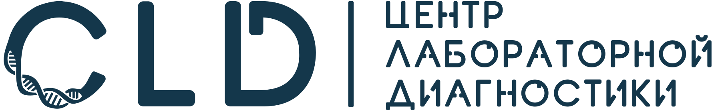